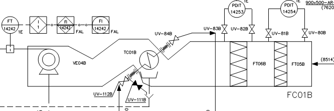
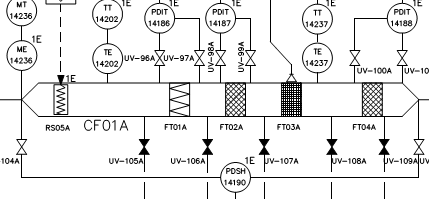

Subsistema Nuclear (CS-3) - atende os consumidores CS-3;
Subsistema Não-Nuclear - atende os consumidores CS-NN.
A dissipação final é realizada pelos resfriadores evaporativos que envia calor para atmosfera.
Porque o Subsistema Nuclear possui dois trêns redundantes e independentes e cada um deles rejeita calor para outro circuito redundante e independente, ou seja, cada trêm do subsistema nuclear precisa ter um tanque de expansão e cada circuito no qual ele rejeita calor precisa ter um tanque de expansão cada, somando-se 4 tanques no total(2 trens independentes x 2 circuitos fechados). Já o subsistema não nuclear tem seu circuito de água gelada interligado, por isso, apenas um tanque de expansão consegue atender as redundâncias(apenas 1 circuito fechado compartilhado entre as redundância. Circuito de Água de Condensação aberto).
• SCR, CST e áreas de apoio do PANC
• salas de controle e salas elétricas no APR
• salas elétricas e painéis do prédio dos GDG da SUB2
Ar de serviço é usado para consumo em ferramentas pneumáticas, operações de processo e
limpeza.
Ar de instrumentos é o ar que requer alta pureza: instrumentos, atuadores de válvulas e dampers
Filtros, Secador de Ar e Reservatório de ar de Instrumentos.
6 Reservatórios de Ar de Instrumentos, redundância 1 de 2 para cada prédio atendido (PANC, PR e PC);
Suprir combustível de forma adequada e segura aos 4 grupos Diesel-Geradores de emergência da SUB 2.
Reservatórios de armazenagem (2 un );
Reservatórios de óleo extravasado (2 un );
Tanques diários (04 un);
Grupos Diesel-Geradores (04 un de 1250 KW);
Bombas: transferência, circulação, e de óleo extravasado;
Filtros de óleo combustível.
por 7 dias
CLO - Especificam os requisitos mínimos para assegurar a operação segura da planta, de acordo com os critérios de projeto e parâmetros de segurança.
Sistema de distribuição de água.
Válvulas de Isolamento de Fontes de Água não Borada.
O LABGENE, por opção de projeto, não utiliza compostos borados na água, seja do circuito
primário ou na Piscina de Estocagem Combustível (PEC). Assim, o acidente de diluição inadvertida
de Boro no circuito primário ou na PEC não é crível, fazendo com que esta CLO não seja aplicável
ao LABGENE. (idem para Válvula de Isolamento de Água não Borada)
O sistema de Iluminação tem a finalidade de prover as áreas externas e internas, que compõem o conjunto das instalações do LABGENE, iluminação confiável e que atenda as exigências luminotécnicas dos locais de trabalho, durante os estados operacionais da planta, atividades de manutenção e em condições de acidente.
Sistema de iluminação Corrente Alternada
Sistema de iluminação Corrente Contínua
Sistema de iluminação do PROTER
Sistema de Iluminação em Corrente Alternada Classificado como CS-N1E.
Sistema de Iluminação em Corrente Contínua Classificado como CS-N1E;
Sistema de Iluminação do PROTER Classificado como CS-N1E;
O sistema de comunicação tem a finalidade de proporcionar comunicação confiável entre todas as áreas do LABGENE, durante operação normal da planta, atividades de manutenção, testes, troca de elemento combustível, e satisfazer o Plano de Emergência (PEL) em condições de acidente.
Subsistema de Radiocomunicação
Em condições normais a bomba jockey (5810-B02) manterá a rede de combate a incêndio pressurizada. Essa bomba é comandada pelo Painel de Comando da Bomba Elétrica, que recebe sinais de liga-desliga provenientes do pressostato PSHL-4866.
Quando ocorrer queda de pressão, a bomba jockey é acionada até repor a pressão na rede, e assim que a pressão setada é alcançada, o pressostato envia comando para desligar a bomba.
O pressostato PSL-4864 enviará um sinal ao Painel de Comando da Bomba Elétrica, para o acionamento do conjunto moto bomba elétrico (5810-B01) principal.
Sim, o pressostato PSLL-4863 enviará um sinal ao Painel de Comando do Motor Diesel que então comandará o acionamento do conjunto motobomba diesel (5810-B03)
Fancoil

Caixa de Filtragem

Há sensores que monitoram a temperatura pós filtro adsorvedor e alarmam caso as temperaturas de 150 e 250°C sejam alcançadas para que o operador verifique e execute a abertura das válvulas de inundação do filtro, porém os dampers são fechados automáticamente para cortar a entrada de ar.
sistemas de exaustão da chaminé (R11.06-2177)
Sistemas do Prédio do Reator, Bloco 40, Prédio do Combustível, PAC e Bloco 30, além dos sistemas de exaustão do LABGENE
O Sistema de Drenagem do Prédio do Reator tem por objetivo coletar e armazenar, em reservatórios, os efluentes gerados por vazamentos ou esgotamento de equipamentos e eventual lavagem do piso. Ainda, destinar os efluentes armazenados.
Cada reservatório possui uma chave tipo bóia com 3 posições de atuação (LSH, LSL e LSHH).
O contato LSH liga a bomba (em nível alto) do reservatório;
O contato LSL desliga a bomba do reservatório (em nível baixo);
O contato LSHH é responsável pelo alarme LAHH que sinaliza nível alto-alto no reservatório e
liga a segunda bomba do reservatório.
NOTA: O acionamento e parada manual da bomba pode ser executado no local ou na sala de Controle
do Reator.
O reservatório possui uma chave tipo bóia com 3 posições de atuação (LSH, LSL e LSHH).
O contato LSH liga a bomba (em nível alto) do reservatório;
O contato LSL desliga a bomba do reservatório (em nível baixo);
O contato LSHH é responsável pelo alarme LAHH que sinaliza nível alto-alto no reservatório antes
que transborde.
NOTA: O acionamento e parada manual da bomba pode ser executado da sala de Controle do Labgene.
A operação de seleção e partida das bombas do sistema é manual e pode ser executada no painel
local ou da Sala de Controle do LABGENE.
Cada reservatório possui uma indicação de nível que gera alarmes; baixo LAL, alto LAH e muito
alto LAHH.
Para os RV01, RV02 e RV03:
- LAH o operador deverá acionar a bomba indicada como principal.
- LAHH aciona a bomba indicada como reserva.
- LAL desliga a bomba que estiver operando (automaticamente).
Para o RV04
A operação de seleção e partida das bombas do sistema é manual e pode ser executada no painel
local ou da Sala de Controle do LABGENE.
A sinalização é visual e sonoramente na Sala de Controle.
Cada reservatório possui uma indicação de nível que gera alarmes; baixo LAL, alto LAH e muito
alto LAHH.
LAH - o operador deverá verificar a fonte do vazamento e providenciar a drenagem dos
reservatórios e/ou poços;
LAHH (2151-RV01 e RV05) - o operador poderá acionar a bomba
reserva em conjunto com a principal.
LAL ( 2151-RV01, RV05 e RV06) - Irá desligar automaticamente as bombas 2151-B01A/B, B12A/B e
B13, respectivamente;
LAH (151-RV12 a RV17, RV19 e RV20) - o operador deve garantir o desligamento da bomba em
operação (2151-B09 a B11 / B14 a B18).
Cada reservatório possui uma chave tipo bóia com 3 posições de atuação (LSL, LSH e LSHH).
O contato LSH liga a bomba selecionada (em nível alto) de cada reservatório;
O contato LSL desliga as 2 bombas de cada reservatório (em nível baixo);
O contato LSHH liga a bomba reserva de cada reservatório e o alarme LAHH sinaliza nível
alto-alto.
Remoção de calor residual proveniente do decaimento de produtos de fissão dos Elementos Combustíveis (EC's) irradiados, armazenados nos compartimentos da PEC, após uma operação normal de recarga do núcleo.
Tem como função efetuar a limpeza do piso da piscina (Compartimento I, II e III) e ainda remover o material particulado da superfície da água dos mesmos.
Tem por função Receber, Transportar, Manipular, Estocar e trocar o EC.